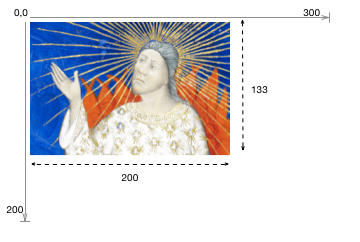
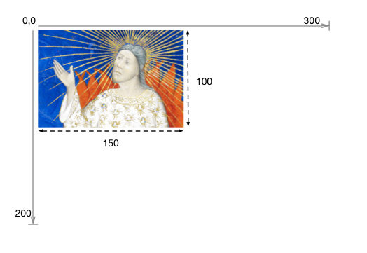
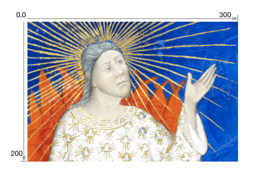
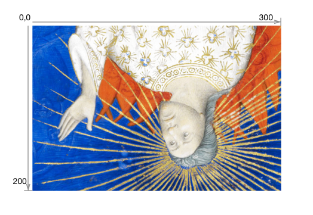

Status of this Document #
This Version: 2.1.1
Latest Stable Version: 3.0.0
Previous Version: 2.0
Editors:
-
Michael Appleby, Yale University
-
Tom Crane, Digirati
-
Robert Sanderson, J. Paul Getty Trust
-
Jon Stroop, Princeton University Library
-
Simeon Warner, Cornell University
Copyright © 2012-2021 Editors and contributors. Published by the IIIF Consortium under the CC-BY license, see disclaimer.
1. Introduction #
This document describes an image delivery API defined by the International Image Interoperability Framework (IIIF, pronounced “Triple-Eye-Eff”) Consortium. The IIIF Image API specifies a web service that returns an image in response to a standard HTTP or HTTPS request. The URI can specify the region, size, rotation, quality characteristics and format of the requested image. A URI can also be constructed to request basic technical information about the image to support client applications. This API was conceived of to facilitate systematic reuse of image resources in digital image repositories maintained by cultural heritage organizations. It could be adopted by any image repository or service, and can be used to retrieve static images in response to a properly constructed URI.
Please send feedback to iiif-discuss@googlegroups.com.
1.1. Audience and Scope #
This document is intended for architects and developers building applications that share and consume digital images, particularly from cultural heritage institutions, museums, libraries and archives. Target applications include:
- Digital image repositories and distributed content networks.
- Image focused web applications, such as pan/zoom viewers, book-readers, etc.
- Client applications using image content for analysis or comparison.
This specification concerns image requests by a client, but not management of the images by the server. It covers how to respond to the requests given in a particular URI syntax, but does not cover methods of implementation such as rotation algorithms, transcoding, color management, compression, or how to respond to URIs that do not conform to the specified syntax. This allows flexibility for implementation in domains with particular constraints or specific community practices, while supporting interoperability in the general case.
1.2. Terminology #
The key words must, must not, required, shall, shall not, should, should not, recommended, and optional in this document are to be interpreted as described in RFC 2119.
2. URI Syntax #
The IIIF Image API can be called in two ways:
- Request an image, which may be part of a larger image.
- Request information about the image, including characteristics, functionality available, and related services.
Both convey the request’s information in the path segments of the URI, rather than as query parameters. This makes responses easier to cache, either at the server or by standard web-caching infrastructure. It also permits a minimal implementation using pre-computed files in a matching directory structure.
There are four parameters shared by the requests, and other IIIF specifications:
| Name | Description |
|---|---|
| scheme | Indicates the use of the HTTP or HTTPS protocol in calling the service. |
| server | The host server on which the service resides. The parameter may also include a port number. |
| prefix | The path on the host server to the service. This prefix is optional, but may be useful when the host server supports multiple services. The prefix may contain multiple path segments, delimited by slashes, but all other special characters must be encoded. See URI Encoding and Decoding for more information. |
| identifier | The identifier of the requested image. This may be an ark, URN, filename, or other identifier. Special characters must be URI encoded. |
The combination of these parameters forms the image’s base URI and identifies the underlying image content. It is constructed according to the following URI Template (RFC6570):
{scheme}://{server}{/prefix}/{identifier}
When the base URI is dereferenced, the interaction should result in the image information document. It is recommended that the response be a 303 status redirection to the image information document’s URI. Implementations may also exhibit other behavior for the base URI beyond the scope of this specification in response to HTTP request headers and methods.
To allow for extensions, this specification does not define the server behavior when it receives requests that do not match either the base URI or one of the described URI syntaxes below.
2.1. Image Request URI Syntax #
The IIIF Image API URI for requesting an image must conform to the following URI Template:
{scheme}://{server}{/prefix}/{identifier}/{region}/{size}/{rotation}/{quality}.{format}
For example:
http://www.example.org/image-service/abcd1234/full/full/0/default.jpg
The parameters of the Image Request URI include region, size, rotation, quality and format, which define the characteristics of the returned image. These are described in detail in Image Request Parameters.
2.2. Image Information Request URI Syntax #
The URI for requesting image information must conform to the following URI Template:
{scheme}://{server}{/prefix}/{identifier}/info.json
For example:
http://www.example.org/image-service/abcd1234/info.json
The scheme, server, prefix and identifier components of the information request must be identical to those for the image request described above for the image content that the image information document describes. The image information document is described in detail in the Image Information section.
3. Identifier #
The API places no restrictions on the form of the identifiers that a server may use or support. All special characters (e.g. ? or #) must be URI encoded to avoid unpredictable client behaviors. The URI syntax relies upon slash (/) separators so any slashes in the identifier must be URI encoded (also called “percent encoded”). See the additional discussion in URI Encoding and Decoding.
4. Image Request Parameters #
All parameters described below are required for compliant construction of a IIIF Image API URI. The sequence of parameters in the URI must be in the order described below. The order of the parameters is also intended as a mnemonic for the order of the operations by which the service should manipulate the image content. Thus, the requested image content is first extracted as a region of the complete image, then scaled to the requested size, mirrored and/or rotated, and finally transformed into the color quality and format. This resulting image content is returned as the representation for the URI. Image and region dimensions in pixels are always given as an integer numbers. Intermediate calculations may use floating point numbers and the rounding method is implementation specific. Some parameters, notably percentages, may be specified with floating point numbers. These should have at most 10 decimal digits and consist only of decimal digits and “.” with a leading zero if less than 1.0.
4.1. Region #
The region parameter defines the rectangular portion of the full image to be returned. Region can be specified by pixel coordinates, percentage or by the value “full”, which specifies that the entire image should be returned.
| Form | Description |
|---|---|
full |
The complete image is returned, without any cropping. |
square |
The region is defined as an area where the width and height are both equal to the length of the shorter dimension of the complete image. The region may be positioned anywhere in the longer dimension of the image content at the server’s discretion, and centered is often a reasonable default. |
| x,y,w,h | The region of the full image to be returned is specified in terms of absolute pixel values. The value of x represents the number of pixels from the 0 position on the horizontal axis. The value of y represents the number of pixels from the 0 position on the vertical axis. Thus the x,y position 0,0 is the upper left-most pixel of the image. w represents the width of the region and h represents the height of the region in pixels. |
| pct:x,y,w,h | The region to be returned is specified as a sequence of percentages of the full image’s dimensions, as reported in the image information document. Thus, x represents the number of pixels from the 0 position on the horizontal axis, calculated as a percentage of the reported width. w represents the width of the region, also calculated as a percentage of the reported width. The same applies to y and h respectively. These may be floating point numbers. |
If the request specifies a region which extends beyond the dimensions reported in the image information document, then the service should return an image cropped at the image’s edge, rather than adding empty space.
If the requested region’s height or width is zero, or if the region is entirely outside the bounds of the reported dimensions, then the server should return a 400 status code.
Examples:
|
1 region=full
|

2 region=square
|

3 region=125,15,120,140
|

4 region=pct:41.6,7.5,40,70
|

5 region=125,15,200,200
N.B. Returned image is 175,185 px |

6 region=pct:41.6,7.5,66.6,100
N.B. Returned image is 175,185 px |
4.2. Size #
The size parameter determines the dimensions to which the extracted region is to be scaled.
| Form | Description |
|---|---|
full |
The image or region is not scaled, and is returned at its full size. Note deprecation warning. |
max |
The image or region is returned at the maximum size available, as indicated by maxWidth, maxHeight, maxArea in the profile description. This is the same as full if none of these properties are provided. |
| w, | The image or region should be scaled so that its width is exactly equal to w, and the height will be a calculated value that maintains the aspect ratio of the extracted region. |
| ,h | The image or region should be scaled so that its height is exactly equal to h, and the width will be a calculated value that maintains the aspect ratio of the extracted region. |
| pct:n | The width and height of the returned image is scaled to n% of the width and height of the extracted region. The aspect ratio of the returned image is the same as that of the extracted region. |
| w,h | The width and height of the returned image are exactly w and h. The aspect ratio of the returned image may be different than the extracted region, resulting in a distorted image. |
| !w,h | The image content is scaled for the best fit such that the resulting width and height are less than or equal to the requested width and height. The exact scaling may be determined by the service provider, based on characteristics including image quality and system performance. The dimensions of the returned image content are calculated to maintain the aspect ratio of the extracted region. |
If the resulting height or width is zero, then the server should return a 400 (bad request) status code.
The image server may support scaling above the full size of the extracted region.
Deprecation Warning
The size keyword full will be replaced in favor of max in version 3.0. Until that time, the w, syntax should be considered the canonical form of request for the max size, unless max is equivalent to full. Feedback is welcome via iiif-discuss or on the Github issue.
Examples:
|
1 size=full
|

1 size=full
N.B. Assuming that the image has a |

2 size=150,
|

3 size=,150
|

4 size=pct:50
|

5 size=225,100
|
|
6 size=!225,100
N.B. Returned image is 150,100 px |
4.3. Rotation #
The rotation parameter specifies mirroring and rotation. A leading exclamation mark (“!”) indicates that the image should be mirrored by reflection on the vertical axis before any rotation is applied. The numerical value represents the number of degrees of clockwise rotation, and may be any floating point number from 0 to 360.
| Form | Description |
|---|---|
| n | The degrees of clockwise rotation from 0 up to 360. |
| !n | The image should be mirrored and then rotated as above. |
A rotation value that is out of range or unsupported should result in a 400 status code.
In most cases a rotation will change the width and height dimensions of the returned image. The service should return an image that contains all of the image contents requested in the region and size parameters, even if the dimensions of the returned image file are different than specified in the size parameter. The image contents should not be scaled as a result of the rotation, and there should be no additional space between the corners of the rotated image contents and the bounding box of the returned image content.
For rotations which are not multiples of 90 degrees, it is recommended that the client request the image in a format that supports transparency, such as PNG, and that the server return the image with a transparent background. There is no facility in the API for the client to request a particular background color or other fill pattern.
Examples:
|
1 rotation=0
|

2 rotation=180
|

3 rotation=90
|
4 rotation=22.5
|
|

5 rotation=!0
|

6 rotation=!180
|
4.4. Quality #
The quality parameter determines whether the image is delivered in color, grayscale or black and white.
| Quality | Parameter Returned |
|---|---|
color |
The image is returned in full color. |
gray |
The image is returned in grayscale, where each pixel is black, white or any shade of gray in between. |
bitonal |
The image returned is bitonal, where each pixel is either black or white. |
default |
The image is returned using the server’s default quality (e.g. color, gray or bitonal) for the image. |
The default quality exists to support level 0 compliant implementations that may not know the qualities of individual images in their collections. It also provides a convenience for clients that know the values for all other parameters of a request except the quality (e.g. .../full/120,/90/{quality}.png to request a thumbnail) in that a preliminary image information request that would only serve to find out which qualities are available can be avoided.
A quality value that is unsupported should result in a 400 status code.
Examples:
|
1 quality=default
|
2 quality=color
|

3 quality=gray
|
4 quality=bitonal
|
4.5. Format #
The format of the returned image is expressed as an extension at the end of the URI.
| Extension | MIME Type |
|---|---|
jpg |
image/jpeg |
tif |
image/tiff |
png |
image/png |
gif |
image/gif |
jp2 |
image/jp2 |
pdf |
application/pdf |
webp |
image/webp |
A format value that is unsupported should result in a 400 status code.
Examples:
.../full/full/0/default.jpg.../full/full/0/default.png.../full/full/0/default.tif
4.6. Order of Implementation #
The sequence of parameters in the URI is intended as a mnemonic for the order in which image manipulations are made against the full image content. This is important to consider when implementing the service because applying the same parameters in a different sequence will often result in a different image being delivered. The order is critical so that the application calling the service reliably receives the output it expects.
The parameters should be interpreted as if the sequence of image manipulations were:
Region THEN Size THEN Rotation THEN Quality THEN Format
If the rotation parameter includes mirroring (“!”), the mirroring is applied before the rotation.

1 region=125,15,120,140 size=90, rotation=!345 quality=gray
|
4.7. Canonical URI Syntax #
It is possible to request the same image using different combinations of parameters. While it is useful for clients to be able to express their requests in a convenient form, there are several reasons why a canonical URI syntax is desirable:
- It enables static, file-system based implementations, which will have only a single URI at which the content is available.
- Caching becomes significantly more efficient, both client and server side, when the URIs used are the same between systems and sessions.
- Response times can be improved by avoiding redirects from a requested non-canonical URI syntax to the canonical syntax by using the canonical form directly.
In order to support the above requirements, clients should construct the image request URIs using the following canonical parameter values where possible. Image servers may redirect the client to the canonical URI from a non-canonical equivalent.
| Parameter | Canonical value |
|---|---|
| region | “full” if the whole image is requested, (including a “square” region of a square image) otherwise the x,y,w,h syntax. |
| size | “full” if the default size is requested, the w, syntax for images that should be scaled maintaining the aspect ratio,and the w,h syntax for explicit sizes that change the aspect ratio. Note: The size keyword “full” will be replaced with “max” in version 3.0. See the deprecation warning under size for more information. |
| rotation | ”!” if the image is mirrored, followed by an integer if possible, and trimming any trailing zeros in a decimal value, and a leading 0 if the value is below 1. |
| quality | “default” if the server’s default quality is requested, otherwise the quality string. |
| format | The explicit format string is always required. |
When the client requests an image, the server may add a link header to the response that indicates the canonical URI for that request:
Link: <http://iiif.example.com/server/full/400,/0/default.jpg>;rel="canonical"
The server may include this link header on the image information response, however it is unnecessary as it is included in the JSON representation retrieved.
5. Image Information #
Servers must support requests for image information. The response includes technical properties about the image and may also contain rights and licensing properties, and services related to it.
5.1. Image Information Request #
The request for the information must conform to the URI Template:
{scheme}://{server}{/prefix}/{identifier}/info.json
The syntax for the response is JSON-LD. The content-type of the response must be either “application/json” (regular JSON),
Content-Type: application/json
or “application/ld+json” (JSON-LD).
Content-Type: application/ld+json
If the client explicitly wants the JSON-LD content-type, then it must specify this in an Accept header, otherwise the server must return the regular JSON content-type.
Servers should send the Access-Control-Allow-Origin header with the value * in response to information requests. The syntax is shown below and is described in the CORS specification. This header is required in order to allow the JSON responses to be used by Web applications hosted on different servers.
Access-Control-Allow-Origin: *
A recipe for enabling these behaviors is provided in the Apache HTTP Server Implementation Notes.
5.2. Technical Properties #
| Technical Property | Required? | Description |
|---|---|---|
@context |
Required | The context document that describes the semantics of the terms used in the document. This must be the URI: http://iiif.io/api/image/2/context.json for version 2.1 of the IIIF Image API. This document allows the response to be interpreted as RDF, using the JSON-LD serialization. |
@id |
Required | The base URI of the image as defined in URI Syntax, including scheme, server, prefix and identifier without a trailing slash. |
@type |
Optional | The type for the Image. If present, the value must be the string iiif:Image. |
protocol |
Required | The URI http://iiif.io/api/image which can be used to determine that the document describes an image service which is a version of the IIIF Image API. |
width |
Required | The width in pixels of the full image content, given as an integer. |
height |
Required | The height in pixels of the full image content, given as an integer. |
profile |
Required | A list of profiles, indicated by either a URI or an object describing the features supported. The first entry in the list must be a compliance level URI. |
sizes |
Optional | A set of height and width pairs the client should use in the size parameter to request complete images at different sizes that the server has available. This may be used to let a client know the sizes that are available when the server does not support requests for arbitrary sizes, or simply as a hint that requesting an image of this size may result in a faster response. A request constructed with the w,h syntax using these sizes must be supported by the server, even if arbitrary width and height are not. |
tiles |
Optional | A set of descriptions of the parameters to use to request regions of the image (tiles) that are efficient for the server to deliver. Each description gives a width, optionally a height for non-square tiles, and a set of scale factors at which tiles of those dimensions are available. |
The objects in the sizes list have the properties in the following table. Images requested using these sizes should have a region parameter of “full” and rotation of “0”. The size should be requested using the canonical syntax of w,. Thus, the full URL for an image with “default” quality in “jpg” format would be: {scheme}://{server}/{prefix}/{identifier}/full/{width},/0/default.jpg
Note that the values in width and height do not necessarily imply that an image of that size is available. If sizes, maxArea, maxWidth, or maxHeight are present, they may indicate constraints on the maximum size of image that can be requested. The width and height information is still required in order to construct tile requests and know the aspect ratio of the image.
Warning
There is an inconsistency between the specification of the sizes list and the canonical URI syntax. Clients should use the Canonical URI Syntax when making image requests based on entries in sizes. For maximum compatibility, servers should support both the w, and w,h forms of the size parameter for values in sizes that maintain the aspect ratio. This inconsistency will be addressed in the next major version of this specification.
| Size Object Property | Required? | Description |
|---|---|---|
@type |
Optional | The type of the object. If present, the value must be the string iiif:Size. |
width |
Required | The width in pixels of the image to be requested, given as an integer. |
height |
Required | The height in pixels of the image to be requested, given as an integer. |
The objects in the tiles list have the properties in the following table. The width and height should be used to fill the region parameter and the scaleFactors to complete the size parameter of the image URL. This is described in detail in the Implementation Notes.
The width of a tile, or the combination of width and height if height is specified, must be unique among the members of the tiles list.
| Tile Object Property | Required? | Description |
|---|---|---|
@type |
Optional | The type of the Tile. If present, the value must be the string iiif:Tile. |
scaleFactors |
Required | The set of resolution scaling factors for the image’s predefined tiles, expressed as positive integers by which to divide the full size of the image. For example, a scale factor of 4 indicates that the service can efficiently deliver images at 1/4 or 25% of the height and width of the full image. A particular scale factor value should appear only once in the tiles list. |
width |
Required | The width in pixels of the predefined tiles to be requested, given as an integer. |
height |
Optional | The height in pixels of the predefined tiles to be requested, given as an integer. If it is not specified in the JSON, then it defaults to the same as width, resulting in square tiles. |
Servers should support requests for images with parameters specified by the sizes and tiles fields for all combinations of qualities and formats supported.
The following shows a valid image information response, including the optional sizes and tiles properties.
{
"@context" : "http://iiif.io/api/image/2/context.json",
"@id" : "http://www.example.org/image-service/abcd1234/1E34750D-38DB-4825-A38A-B60A345E591C",
"protocol" : "http://iiif.io/api/image",
"width" : 6000,
"height" : 4000,
"sizes" : [
{"width" : 150, "height" : 100},
{"width" : 600, "height" : 400},
{"width" : 3000, "height": 2000}
],
"tiles": [
{"width" : 512, "scaleFactors" : [1,2,4,8,16]}
],
"profile" : [ "http://iiif.io/api/image/2/level2.json" ]
}
5.3. Profile Description #
In order to specify additional features that are supported for the image, a profile object may be added to the profile list. Objects in the profile list have the properties in the following table. The @context, @id and @type properties are required when the profile is dereferenced from a URI, but should not be included in the image information response.
| Profile Property | Required? | Description |
|---|---|---|
@context |
Optional | The string “http://iiif.io/api/image/2/context.json”. This should be included only if the profile’s URI is dereferenced. |
@id |
Optional | The URI of the profile. |
@type |
Optional | The type of the object. If present, the value must be the string “iiif:ImageProfile”. |
formats |
Optional | The set of image format parameter values available for the image. If not specified then clients should assume only formats declared in the compliance level document. |
maxArea |
Optional | The maximum area in pixels supported for this image. Requests for images sizes with width*height greater than this may not be supported. |
maxHeight |
Optional | The maximum height in pixels supported for this image. Requests for images sizes with height greater than this may not be supported. If maxWidth is specified and maxHeight is not, then clients should infer that maxHeight = maxWidth. |
maxWidth |
Optional | The maximum width in pixels supported for this image. Requests for images sizes with width greater than this may not be supported. must be specified if maxHeight is specified. |
qualities |
Optional | The set of image quality parameter values available for the image. If not specified then clients should assume only qualities declared in the compliance level document. |
supports |
Optional | The set of features supported for the image. If not specified then clients should assume only features declared in the compliance level document. |
The maxWidth, maxHeight and maxArea parameters provide a way for image servers to express limits on the sizes supported for the image. If maxWidth alone, or maxWidth and maxHeight are specified then clients should expect requests with larger linear dimensions to be rejected. If maxArea is specified then clients should expect requests with larger pixel areas to be rejected. The maxWidth / maxHeight and maxArea parameters are independent, servers may implement either or both limits. Servers must ensure that sizes specified by any sizes or tiles properties are within any size limits expressed. Clients should not make requests that exceed size limits expressed.
The set of features that may be specified in the supports property of an Image profile are:
| Feature Name | Description |
|---|---|
baseUriRedirect |
The base URI of the service will redirect to the image information document. |
canonicalLinkHeader |
The canonical image URI HTTP link header is provided on image responses. |
cors |
The CORS HTTP header is provided on all responses. |
jsonldMediaType |
The JSON-LD media type is provided when JSON-LD is requested. |
mirroring |
The image may be rotated around the vertical axis, resulting in a left-to-right mirroring of the content. |
profileLinkHeader |
The profile HTTP link header is provided on image responses. |
regionByPct |
Regions of images may be requested by percentage. |
regionByPx |
Regions of images may be requested by pixel dimensions. |
regionSquare |
A square region where the width and height are equal to the shorter dimension of the complete image content. |
rotationArbitrary |
Rotation of images may be requested by degrees other than multiples of 90. |
rotationBy90s |
Rotation of images may be requested by degrees in multiples of 90. |
sizeAboveFull |
Size of images may be requested larger than the “full” size. See warning. |
sizeByConfinedWh |
Size of images may be requested in the form “!w,h”. |
sizeByDistortedWh |
Size of images may be requested in the form “w,h”, including sizes that would distort the image. |
sizeByH |
Size of images may be requested in the form “,h”. |
sizeByPct |
Size of images may be requested in the form “pct:n”. |
sizeByW |
Size of images may be requested in the form “w,”. |
sizeByWh |
Size of images may be requested in the form “w,h” where the supplied w and h preserve the aspect ratio. |
sizeByWhListed |
See deprecation warning below. |
sizeByForcedWh |
See deprecation warning below. |
Deprecation Warning
Use of the feature names sizeByWhListed and sizeByForcedWh is deprecated. These names will be removed in version 3.0. sizeByForcedWh was inconsistently defined in version 2.0, and sizeByWhListed is implied by listing the sizes in the image information document and is therefore not required as a named feature.
The features sizeByWh and sizeByDistortedWh share the same “w,h” syntax for the size parameter, but they represent separate features. A server that supports sizeByWh but not sizeByDistortedWh would serve an image response at any scale (subject to separate maxWidth, maxHeight, maxArea and sizeAboveFull constraints if present), but only if the resulting image preserved the original aspect ratio. Requests for distorted images would not be served.
A server that supports neither sizeByW or sizeByWh is only required to serve the image sizes listed under the sizes property or implied by the tiles property of the image information document, allowing for a static file implementation.
The set of features, formats and qualities supported is the union of those declared in all of the external profile documents and any embedded profile objects. If a feature is not present in either the profile document or the supports property of an embedded profile, then a client must assume that the feature is not supported.
If any of formats, qualities, or supports have no additional values beyond those specified in the referenced compliance level, then the property should be omitted from the response rather than being present with an empty list.
URIs may be added to the supports list of a profile to cover features not defined in this specification. Clients must ignore URIs that are not recognized.
The following fragment shows a profile indicating support for additional formats, qualities, and features beyond level 2 compliance. It also includes a size limit.
{
"@context" : "http://iiif.io/api/image/2/context.json",
"@id" : "http://www.example.org/image-service/abcd1234/1E34750D-38DB-4825-A38A-B60A345E591C",
"protocol" : "http://iiif.io/api/image",
//...
"profile" : [
"http://iiif.io/api/image/2/level2.json",
{
"formats" : [ "gif", "pdf" ],
"qualities" : [ "color", "gray" ],
"maxWidth" : 2000,
"supports" : [
"canonicalLinkHeader", "rotationArbitrary", "profileLinkHeader", "http://example.com/feature/"
]
}
]
}
5.4. Rights and Licensing Properties #
The rights and licensing properties, attribution, license and logo, have the same semantics and requirements as those in the Presentation API.
| Rights and Licensing Property | Required? | Description |
|---|---|---|
attribution |
Optional | Text that must be shown when content obtained from the Image API service is displayed or used. It might include copyright or ownership statements, or a simple acknowledgement of the providing institution. The value may contain simple HTML as described in the HTML Markup in Property Values section of the Presentation API. |
license |
Optional | A link to an external resource that describes the license or rights statement under which content obtained from the Image API service may be used. |
logo |
Optional | A small image that represents an individual or organization associated with the content. Logo images must be clearly rendered when content obtained from the Image API service is displayed or used. Clients must not crop, rotate, or otherwise distort the image. |
All of the rights and licensing properties may have multiple values, expressed as a JSON array, or a single value.
In the case where multiple values are supplied for attribution, clients must use the following algorithm to determine which values to display to the user.
- If none of the values have a language associated with them, the client must display all of the values.
- Else, the client should try to determine the user’s language preferences, or failing that use some default language preferences. Then:
- If any of the values have a language associated with them, the client must display all of the values associated with the language that best matches the language preference.
- If all of the values have a language associated with them, and none match the language preference, the client must select a language and display all of the values associated with that language.
- If some of the values have a language associated with them, but none match the language preference, the client must display all of the values that do not have a language associated with them.
The value of the logo property may be a string containing the URL of the image, or a JSON object that indicates the URI of both the logo image and a IIIF Image API service for the logo. While possible, it is recommended that logos with IIIF services do not, themselves, have logos. Clients encountering logos with logos are not required to display a potentially infinite set.
When both the Image and Presentation APIs express attributions or logos, then clients must display both unless they are identical.
The following shows a simple use of each of these properties:
{
"@context" : "http://iiif.io/api/image/2/context.json",
"@id" : "http://www.example.org/image-service/abcd1234/1E34750D-38DB-4825-A38A-B60A345E591C",
"protocol" : "http://iiif.io/api/image",
// ...
"attribution" : "Provided by Example Organization",
"logo" : "http://example.org/images/logo.png",
"license" : "http://rightsstatements.org/vocab/InC-EDU/1.0/"
// ...
}
More complex examples are given in the Complete Response Example.
5.5. Related Services #
| Property | Required? | Description |
|---|---|---|
service |
Optional | The service property provides hooks for additional information to be included in the image description, for example a link to an authentication service. The value may be an object or a list of objects. |
There may be one or more services associated with an image. See the Service Profiles annex for more information.
The following shows a use of service to associate the login page of an authentication system that users must go through in order to access the image. For further information, please see Authentication.
{
"@context" : "http://iiif.io/api/image/2/context.json",
"@id" : "http://www.example.org/image-service/abcd1234/1E34750D-38DB-4825-A38A-B60A345E591C",
"protocol" : "http://iiif.io/api/image",
// ...
"service": {
"@context" : "http://iiif.io/api/auth/1/context.json",
"@id" : "http://www.example.org/auth/login.html",
"profile": "http://iiif.io/api/auth/1/login"
}
}
More complex examples are given in the Complete Response Example.
5.6. Complete Response #
The following shows a response including all of the required and optional image information properties.
{
"@context" : "http://iiif.io/api/image/2/context.json",
"@id" : "http://www.example.org/image-service/abcd1234/1E34750D-38DB-4825-A38A-B60A345E591C",
"protocol" : "http://iiif.io/api/image",
"width" : 6000,
"height" : 4000,
"sizes" : [
{"width" : 150, "height" : 100},
{"width" : 600, "height" : 400},
{"width" : 3000, "height": 2000}
],
"tiles": [
{"width" : 512, "scaleFactors" : [1,2,4]},
{"width" : 1024, "height" : 2048, "scaleFactors" : [8,16]}
],
"attribution" : [
{
"@value" : "<span>Provided by Example Organization</span>",
"@language" : "en"
},{
"@value" : "<span>Darparwyd gan Enghraifft Sefydliad</span>",
"@language" : "cy"
}
],
"logo" : {
"@id" : "http://example.org/image-service/logo/full/200,/0/default.png",
"service" : {
"@context" : "http://iiif.io/api/image/2/context.json",
"@id" : "http://example.org/image-service/logo",
"profile" : "http://iiif.io/api/image/2/level2.json"
}
},
"license" : [
"http://example.org/rights/license1.html",
"http://rightsstatements.org/vocab/InC-EDU/1.0/"
],
"profile" : [
"http://iiif.io/api/image/2/level2.json",
{
"formats" : [ "gif", "pdf" ],
"qualities" : [ "color", "gray" ],
"supports" : [
"canonicalLinkHeader", "rotationArbitrary", "profileLinkHeader", "http://example.com/feature/"
]
}
],
"service" : [
{
"@context": "http://iiif.io/api/annex/services/physdim/1/context.json",
"profile": "http://iiif.io/api/annex/services/physdim",
"physicalScale": 0.0025,
"physicalUnits": "in"
},{
"@context" : "http://geojson.org/geojson-ld/geojson-context.jsonld",
"@id" : "http://www.example.org/geojson/paris.json"
}
]
}
6. Compliance Levels #
The image information document must specify the extent to which the API is supported by including a compliance level URI as the first entry in the profile property. This URI links to a description of the highest compliance level for which all requirements are met. The URI must be one of those listed in the Image API Compliance document. This description contains the set of features required by the profile, as discussed in the Image Information section. A server may declare different compliance levels for images with different identifiers.
The compliance level URI may also be given in the HTTP Link header (RFC5988) with the parameter rel="profile", and thus a complete header might look like:
Link: <http://iiif.io/api/image/2/level1.json>;rel="profile"
A recipe for setting this header on the Apache HTTP Server is shown in the Apache HTTP Server Implementation Notes.
7. Server Responses #
7.1. Successful Responses #
Servers may transmit HTTP responses with 200 (Successful) or 3xx (Redirect) status codes when the request has been successfully processed. If the status code is 200, then the entity-body must be the requested image or information document. If the status code is 301, 302, 303, or 304, then the entity-body is unrestricted, but it is recommended to be empty. If the status code is 301, 302, or 303 then the Location HTTP Header must be set containing the URI of the image that fulfills the request. This enables servers to have a single canonical URI to promote caching of responses. Status code 304 is handled exactly as per the HTTP specification. Clients should expect to encounter all of these situations and must not assume that the entity-body of the initial response necessarily contains the image data.
7.2. Error Conditions #
The order in which servers parse requests and detect errors is not specified. A request is likely to fail on the first error encountered and return an appropriate HTTP status code, with common codes given in the list below. It is recommended that the body of the error response includes a human-readable description of the error in either plain text or html.
| Status Code | Description |
|---|---|
| 400 Bad Request | The server cannot fulfill the request, as the syntax of the request issued by the client is incorrect. |
| 401 Unauthorized | Authentication is required and not provided. See the Authentication section for details. |
| 403 Forbidden | The user, authenticated or not, is not permitted to perform the requested operation. |
| 404 Not Found | The image resource specified by identifier does not exist, the value of one or more of the parameters is not supported for this image, or the requested size is greater than the limits specified. |
| 500 Internal Server Error | The server encountered an unexpected error that prevented it from fulfilling the request. |
| 501 Not Implemented | The server received a valid IIIF request that is not implemented. |
| 503 Service Unavailable | The server is busy/temporarily unavailable due to load/maintenance issues. |
8. Authentication #
Images are generally secondary resources in a web page or application. In the case of web pages, images are embedded in the HTML img tag, and are retrieved via additional HTTP requests. When a user cannot load a web page, it is possible — and a generally accepted behavior — to redirect the user to another page and offer the opportunity to authenticate. This is not an option for secondary resources such as images, and the user is instead simply presented with a broken image icon.
No new authentication mechanisms are proposed, nor roles for authorization business logic. Instead, it is expected that authentication requirements and processes are handled outside of any IIIF-specific context, but within a IIIF-aware access control workflow. Please see the draft authentication specification.
9. URI Encoding and Decoding #
The URI syntax of this API relies upon slash (/) separators which must not be encoded. Clients must percent-encode special characters (the to-encode set below: percent and gen-delims of RFC3986 except the colon) plus any characters outside the US-ASCII set within the components of requests. For example, any slashes within the identifier part of the URI must be percent-encoded. Encoding is necessary only for the identifier because other components will not include special characters. Percent-encoding other characters introduces no ambiguity but is unnecessary.
to-encode = "/" / "?" / "#" / "[" / "]" / "@" / "%"
| Parameters | URI path |
|---|---|
| identifier=id1 region=full size=full rotation=0 quality=default | id1/full/full/0/default |
| identifier=id1 region=0,10,100,200 size=pct:50 rotation=90 quality=default format=png | id1/0,10,100,200/pct:50/90/default.png |
| identifier=id1 region=pct:10,10,80,80 size=50, rotation=22.5 quality=color format=jpg | id1/pct:10,10,80,80/50,/22.5/color.jpg |
| identifier=bb157hs6068 region=full size=full rotation=270 quality=gray format=jpg | bb157hs6068/full/full/270/gray.jpg |
| identifier=ark:/12025/654xz321 region=full size=full rotation=0 quality=default | ark:%2F12025%2F654xz321/full/full/0/default |
| identifier=urn:foo:a123,456 region=full size=full rotation=0 quality=default | urn:foo:a123,456/full/full/0/default |
| identifier=urn:sici:1046-8188(199501)13:1%3C69:FTTHBI%3E2.0.TX;2-4 region=full size=full rotation=0 quality=default | urn:sici:1046-8188(199501)13:1%253C69:FTTHBI%253E2.0.TX;2-4/full/full/0/default |
| identifier=http://example.com/?54#a region=full size=full rotation=0 quality=default | http:%2F%2Fexample.com%2F%3F54%23a/full/full/0/default |
Servers which are incapable of processing arbitrarily encoded identifiers should make their best efforts to expose only image identifiers for which clients will not encode any of the characters, and thus it is recommended to limit characters in identifiers to letters, numbers and the underscore character.
10. Security Considerations #
This API defines a URI syntax and the semantics associated with its components. The composition of URIs has few security considerations except possible exposure of sensitive information in URIs or revealing of browse/view behavior of users.
Server applications implementing this API should consider possible denial-of-service attacks, and authentication vulnerabilities based on DNS spoofing. Applications must be careful to parse and sanitize incoming requests (URIs) in ways that avoid overflow, injection, and directory traversal attacks.
It is recommended that servers implementing the sizeAboveFull feature also implement one or more of maxWith, maxHeight, or maxArea in order to prevent arbitrarily large image requests, thus exposing the server to denial-of-service attacks.
Early sanity checking of URIs (lengths, trailing GET, invalid characters, out-of-range parameters) and rejection with appropriate response codes is recommended.
11. Appendices #
A. Implementation Notes #
- For use cases that enable the saving of the image, it is recommended to use the HTTP
Content-Dispositionheader (RFC6266) to provide a convenient filename that distinguishes the image, based on the identifier and parameters provided. - Server implementations may rely on components or frameworks that unescape the URI path, such as Python’s WSGI. In such situations, the requested URI may be parsed from the right in order to handle identifiers possibly containing slashes, given the knowledge of the API parameters and the prefix for which the server handles requests.
- This specification makes no assertion about the rights status of requested images or any other descriptive metadata, whether or not authentication has been accomplished. Please see the IIIF Presentation API for rights and other information.
- Additional Apache HTTP Server implementation notes are available.
- Linked data implementations may construct the info.json response using the frame supplied in the JSON-LD framing implementation note.
- When requesting sizes using the
w,canonical syntax, if a particular height is desired, the following algorithm can be used:
# Calculate request width for `w,` syntax from desired height
request_width = image_width * desired_height / image_height
- When requesting image tiles, the Region and Size parameters must be calculated to take account of partial tiles along the right and lower edges for a full image that is not an exact multiple of the scaled tile size. The algorithm below is shown as Python code and assumes integer inputs and integer arithmetic throughout (ie. remainder discarded on division). Inputs are: size of full image content
(width,height), scale factors, tile size(tw,th), and tile coordinate(n,m)counting from(0,0)in the upper-left corner. Note that the rounding method is implementation dependent.
# Calculate region parameters /xr,yr,wr,hr/
xr = n * tw * s
yr = m * th * s
wr = tw * s
if (xr + wr > width):
wr = width - xr
hr = th * s
if (yr + hr > height):
hr = height - yr
# Calculate size parameters /ws,hs/
ws = tw
if (xr + tw*s > width):
ws = (width - xr + s - 1) / s # +s-1 in numerator to round up
hs = th
if (yr + th*s > height):
hs = (height - yr + s - 1) / s
- As described in Rotation, in order to retain the size of the requested image contents, rotation will change the width and height dimensions of the image returned. A formula for calculating the dimensions of the image returned for a given starting size and rotation is given below. Note that the rounding method is implementation dependent and that some languages require conversion of the angle from degrees to radians.
# (w,h) are size parameters, n is rotation angle
w_returned = abs(w*cos(n)) + abs(h*sin(n))
h_returned = abs(h*cos(n)) + abs(w*sin(n))
B. Versioning #
Starting with version 2.0, this specification follows Semantic Versioning. See the note Versioning of APIs for details regarding how this is implemented.
C. Acknowledgments #
The production of this document was generously supported by a grant from the Andrew W. Mellon Foundation.
Many thanks to the members of the IIIF for their continuous engagement, innovative ideas and feedback.
D. Change Log #
| Date | Description |
|---|---|
| 2017-06-09 | Version 2.1.1 View change log |
| 2016-05-12 | Version 2.1 (Crowned Eagle) View change log |
| 2014-09-11 | Version 2.0 (Voodoo Bunny) View change log |
| 2013-09-17 | Version 1.1 (unnamed) View change log |
| 2012-08-10 | Version 1.0 (unnamed) |